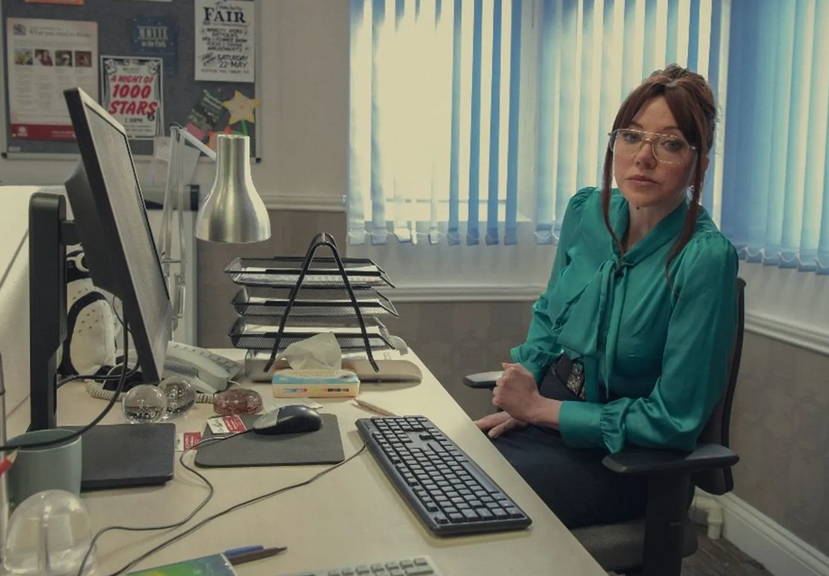

Our Staff
Will Polland - CEO
Being the CEO of a web design company is no easy feat, but William Polland of Hot Beans Web has been doing an excellent job at it for the past seven years. As CEO, William oversees all aspects of the company, from managing employees to overseeing project development. He has a passion for web design and is always looking for ways to improve his company's services. William is known for his attention to detail and his ability to understand the needs of his clients. He takes the time to listen to their ideas and works closely with them to ensure that their vision is brought to life. William is also an excellent communicator and is always available to answer any questions his clients may have. Under his leadership, Hot Beans Web has become one of the most successful web design companies in the industry. His dedication, hard work, and passion for web design have earned him the respect of his peers and clients alike.
Diane Borgan - Lead Web Developer

Diane Borgan is the lead web developer at Hot Beans Web, a position she has held for the past five years. She is responsible for overseeing the development of all web projects and ensuring that they meet the highest standards of quality. Diane is an expert in web development and is always up to date on the latest technologies and trends in the industry. She is known for her attention to detail and her ability to turn complex ideas into functional and user-friendly websites. Diane is also an excellent team leader and is always available to help her team members with any questions or concerns they may have. Under her leadership, the web development team at Hot Beans Web has grown and become one of the most respected in the industry. Her dedication, hard work, and passion for web development have earned her the respect of her colleagues and clients alike.
Paul Paulus - Web Developer

Paul Paulus is a talented web developer at Hot Beans Web, where he has worked for the past three years. Paul is an expert in web development and is always up to date with the latest technologies and trends in the industry. He is known for his ability to turn complex ideas into functional and user-friendly websites. Paul is also an excellent team player and is always available to help his team members with any questions or concerns they may have. He is a great communicator and is always willing to go the extra mile to ensure that his clients are satisfied with their websites. Paul's dedication, hard work, and passion for web development have earned him the respect of his colleagues and clients alike.
Chelsea Lee Art - Web Designer
Chelsea Lee Art is a talented web designer at Hot Beans Web, where she has worked for the past four years. Chelsea is known for her creativity and her ability to create stunning designs that are both visually appealing and user-friendly. She has a passion for design and is always up to date with the latest trends in the industry. Chelsea is also an excellent communicator and is always available to answer any questions her clients may have. She is a great team player and is always willing to collaborate with her colleagues to ensure that every project is a success. Under her leadership, the design team at Hot Beans Web has grown and become one of the most respected in the industry. Her dedication, hard work, and passion for design have earned her the respect of her colleagues and clients alike.
Scott Declan - Head of Social Media and Outreach

Scott Declan is the head of social media and outreach at Hot Beans Web, where he has worked for the past six years. Scott is an expert in social media and is always up to date with the latest trends and best practices in the industry. He is known for his ability to create engaging social media content that resonates with his clients' target audiences. Scott is also an excellent communicator and is always available to answer any questions his clients may have. He is a great team player and is always willing to collaborate with his colleagues to ensure that every project is a success. Under his leadership, the social media and outreach team at Hot Beans Web has grown and become one of the most respected in the industry. His dedication, hard work, and passion for social media and outreach have earned him the respect of his colleagues and clients alike.
Jarvos Cocker - Junior Web Developer

Jarvos Cocker is a junior web developer at Hot Beans Web, where he has worked for the past year. Jarvos is a talented developer and is always eager to learn new things. He is known for his attention to detail and his ability to work well under pressure. Jarvos is also an excellent team player and is always willing to help his colleagues with any questions or concerns they may have. He is a great communicator and is always willing to go the extra mile to ensure that his clients are satisfied with their websites. Under the guidance of his senior colleagues, Jarvos has grown into a valuable member of the web development team at Hot Beans Web. His dedication, hard work, and passion for web development have earned him the respect of his colleagues and clients alike.